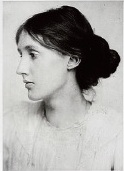

İngiliz roman yazarı ve eleştirmeni Virginia Woolf (1882-1941) modernist akımın en etkili yazarlarından biriydi. James Joyce, William Faulkner ve diğerleri ile birlikte Woolf da yeni öyküleme teknikleri ve tematik yaklaşımlarıyla roman sanatını kökten değiştirmiştir. Bunun yanı sıra Woolf’un İngiltere’nin entelektüel yüksek sosyetesine dâhil olması da, kendisini önemli bir kültürel kişi yapmıştır.

Adeline Virginia Stephen adıyla ayrıcalıklı bir Londra ailesinde dünyaya geldi. Cambridge eğitimli bir yazar ve editör olan babasının kütüphanesinde okuyarak kendisini geliştirdi. 1895’te annesinin ölümünün ardından, hayatının geri kalanı boyunca yakasını bırakmayan depresyon ve sinir krizleri geçirmeye başladı. Bununla birlikte, üretken bir biçimde yazdı ve 1912’de Leonard Woolf ile evlendi. 1917’de çift, Virginia’nın eserlerini ve diğer yazarların kitaplarını basmak ve dağıtmak için küçük bir yayınevi kurdular.
Woolf çifti liberal Londra entelektüel sahnesinde çok etkindiler. Onyıllar boyunca Perşembe akşamları, Londra merkezindeki Bloomsbury semtinde, Virginia’nın kız kardeşi Vanessa’nın evinde entelektüel toplantılar gerçekleştirdiler. Misafirler arasında sıklıkla E.M. Forster, Lytton Strachey, John Maynard Keynes, T.S. Eliot, Aldous Huxley gibi isimler bulunuyordu. Tahmin edileceği üzere Bloomsbury grubu felsefe, din, politika, estetik, cinsellik ve edebiyat sorunlarını tartıştılar.
Zamanın çoğu yazarı gibi Woolf ve Bloomsbury grubu da, I. Dünya Savaşı’nın anlamsız gaddarlığıyla dehşete düştü. On dokuzuncu yüzyılın gerçekçi edebiyat ilkelerinin savaştan sonra yüz yüze geldikleri dünyayı tarif etmekte yetersiz kaldığına inandılar. Değişen dünyayı yorumlamak için tümüyle yeni bir başvuru çerçevesi geliştirmeye karar verdiler.
Woolf Mrs. Dolloway (1925) romanında bir karakterin düşüncelerinin akışını müdahalede bulunmaksızın tasvir etmekle, yani ‘bilinç akışı’ tekniğini uygulayarak, bu görevi kendi üstlendi. Bir parti için hazırlık yapan bir kadını konu eden romandaki basit kurgu, karakterlerin iç seslerinden çok daha az önemlidir. Farklı insanların zihinlerinin içindeki ve dışındaki öyküleyici hamlelere rağmen, karakterler nadiren birbirleri ile ilgili olur veya düşünceleri aynı sayfada buluşur.
Woolf insanların zaman akışını, uçuşan anlardan on yıllara kadar nasıl algıladıkları konusuyla da âdeta büyülenmişçesine ilgilidir. Deniz Feneri (1927) romanının uzun ilk bölümü tek bir gündeki müthiş bir ayrıntıya odaklanır; çok daha kısa olan ikinci bölüm ise sadece birkaç sayfada birçok yılın geçişini gösterir. Woolf altı arkadaşın gençliğinden yaşlılık çağlarına kadar iç seslerini takip eden deneysel bir eser olan Dalgalar (1931) romanında hem zamana, hem de bilinç akışına ilişkin keşiflerini ilerletti.
EK BİLGİ:
1. En sonunda Woolf, akıl hastalığının yükünü taşıyamadı. Mart 1941’de arkasında kocası için bir not bırakarak Sussex’teki evleri Monk’s House yakınında Ouse Nehri’ne atlayarak intihar etti.